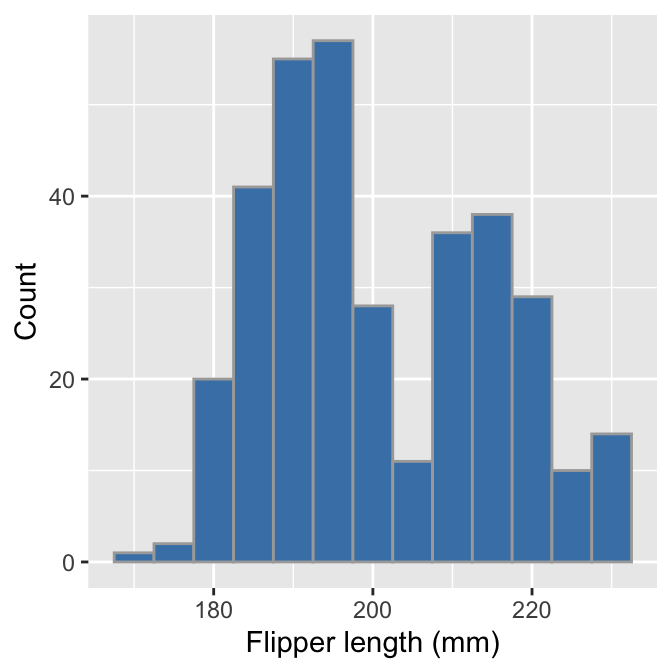
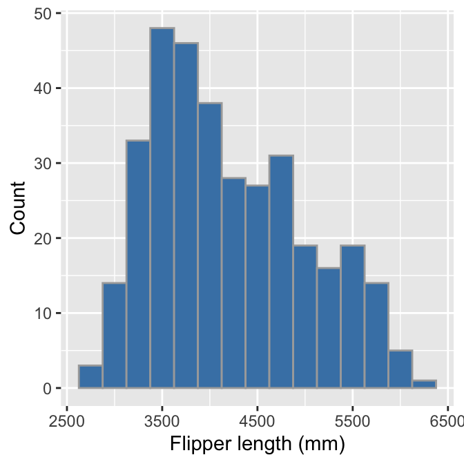
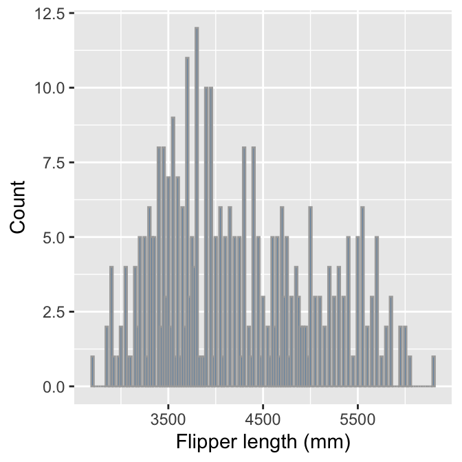
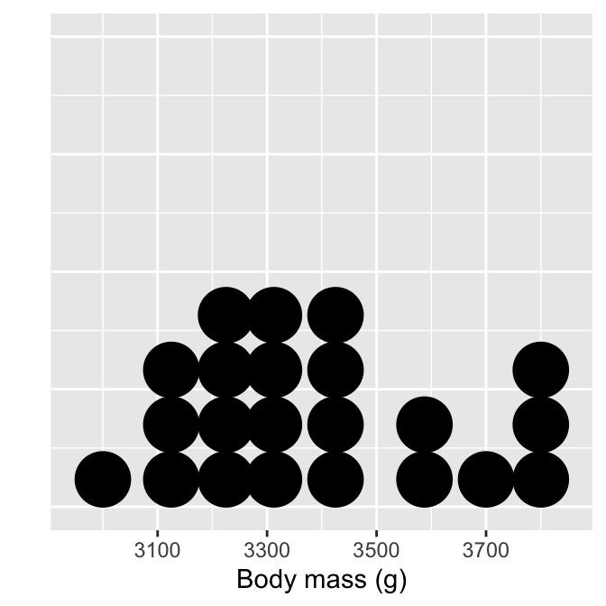
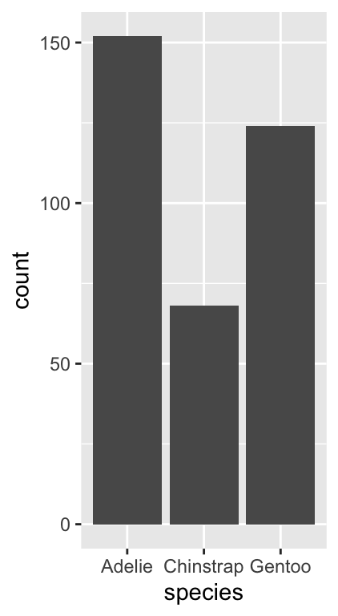
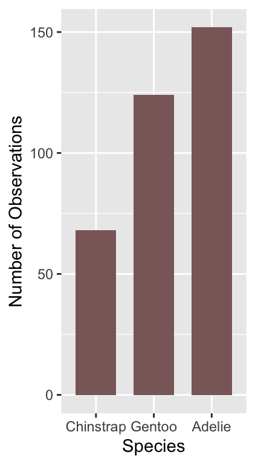
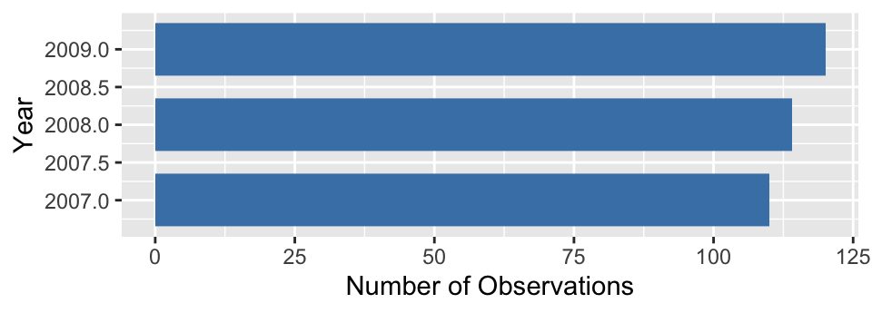

Chapter 15 Exploring one variable
This chapter will consider how to go about exploring a single variable. Using the penguins data, we’ll review some basic visualisations for exploring the sample distribution of numeric and categorical variables.
15.1 Exploring numerical variables
We’ll work with flipper length (flipper_length_mm) and body mass (body_mass_g) to demonstrate how to explore numeric variables.
15.1.1 What kind of numeric variable?
The simplest way to explore data is to view it in its raw form. Take a quick look at the first 100 values of flipper_length_mm and body_mass_g. We can get these by extracting them with the $ operator and using the head function:
flipper length —
head(penguins$flipper_length_mm, 50)## [1] 181 186 195 NA 193 190 181 195 193 190 186 180 182 191 198 185 195 197 184
## [20] 194 174 180 189 185 180 187 183 187 172 180 178 178 188 184 195 196 190 180
## [39] 181 184 182 195 186 196 185 190 182 179 190 191body mass —
head(penguins$body_mass_g, 50)## [1] 3750 3800 3250 NA 3450 3650 3625 4675 3475 4250 3300 3700 3200 3800 4400
## [16] 3700 3450 4500 3325 4200 3400 3600 3800 3950 3800 3800 3550 3200 3150 3950
## [31] 3250 3900 3300 3900 3325 4150 3950 3550 3300 4650 3150 3900 3100 4400 3000
## [46] 4600 3425 2975 3450 4150These are clearly both numeric variables, but we can say a bit more:
- They are both measured on a ratio scale. Zero really is zero, meaning that it makes sense to say that a length of 200 millimetres is twice as long as 100 millimetres or that 6000 grams is twice the mass of 3000 grams.
- They are continuous variables. Think about the possible values flipper length and body mass can take. A length of 200.52 millimetres and a mass of 3000.71 grams are both perfectly reasonable, so fundamentally, these are continuous variables.
Notice that even though body mass is a continuous variable body_mass_g looks discrete because body mass measurements have been taken to the nearest 25 grams. This reflects methodological limitations—presumably, weighing a live penguin to more than 25 grams precision in the field is challenging. This illustrates an important idea: we can’t just look at the values a numeric variable takes to determine whether it is discrete or continuous.
Whether we treat a variable as continuous or discrete is sometimes an analysis decision. We have to decide based on knowledge of a variable’s true nature and the measurement process. For example, if we were only able to measure body mass to the nearest 500 grams, we would only “see” a few different body mass categories. It might then be reasonable to treat the body_mass_g variable as an ordinal, categorical variable.
15.1.2 Histograms
We only looked at the first 50 values of the flipper_length_mm and body_mass_g variables because the penguins data set is a bit too big to view everything at once easily. It’s hard to say much about the sample distribution of a numeric variable by looking at the raw data because there are so many unique values. Those first 50 are also not representative of the whole sample.
What else might we do? One useful tool is ‘binning.’ The idea behind binning a numeric variable is very simple. It involves two steps.
- Divide the number line into equal-sized, non-overlapping intervals. These are the ‘bins.’ We pick the interval size to ensure bins (typically) include at least a few cases.
- We then have to count up the number of times the variable falls inside each bin. The resulting set of counts summarises the sample distribution of the numeric variable.
Binning is very tedious to do by hand. Fortunately, R can do this for us. This shows how to use the cut function with the dplyr transmute and count verbs to bin the flipper_length_mm variable into 5 mm intervals:
penguins %>%
transmute(bins = cut(flipper_length_mm, breaks = seq(170, 235, by = 5))) %>%
count(bins)## # A tibble: 14 x 2
## bins n
## <fct> <int>
## 1 (170,175] 2
## 2 (175,180] 11
## 3 (180,185] 28
## 4 (185,190] 58
## 5 (190,195] 57
## 6 (195,200] 38
## 7 (200,205] 18
## 8 (205,210] 30
## 9 (210,215] 33
## 10 (215,220] 32
## 11 (220,225] 20
## 12 (225,230] 14
## 13 (230,235] 1
## 14 <NA> 2We won’t explain how this works because we only need to understand the output. This is a small tibble where the bins column shows the intervals, and the n column gives the associated counts.
What does this tell us? It shows that the most common flipper length is around 190 mm. Values much below 190 mm are rare, but a range of values above this are possible, with higher values becoming less frequent. These binned data are telling us a lot about the sample distribution of flipper_length_mm.
It is still difficult to perceive distributional information when presented as a series of numbers. What we need is a visualisation based on the above numbers. This is what a histogram provides. Histograms summarise the sample distribution of a variable by showing the counts of binned data as a series of bars. The position and width of each bar correspond to an interval and the height shows the count. Here is a histogram based on the binned data we made:

This gives a clear summary of the sample distribution of body mass. It reveals:
- the most common values, which are round about 190 mm;
- the range of the data, which is about 60 mm; and
- the shape of the distribution, which appears to be bimodal—it has two peaks.
That last observation wasn’t immediately obvious when looking at the raw counts in the binned summary.
We used ggplot2 to make that histogram. We could have used dplyr to make the binned data set and then used this with ggplot2 to construct the plot manually. However, there is a much easier way to make a histogram. We’ll demonstrate this now. Rather than do it using one ggplot2 expression, we will break the process up to demonstrate how it works.
The first step uses the ggplot function with aes to set up the default data and aesthetic mapping:
# create graphical object with data and aesthetic mapping
plot_hist <- ggplot(penguins, aes(x = flipper_length_mm))This is no different than the scatter plot example we stepped through. The only difference is that a histogram requires only one aesthetic mapping. We supplied the argument x = flipper_length_mm to aes because we want to display the map intervals associated with flipper_length_mm to the x-axis. We don’t need to supply an aesthetic mapping for the y-axis because ggplot2 is going to handle this for us.
The second step adds a layer to the plot_hist object. We need to find the right geom_XX function to do this. This is called geom_histogram:
# use geom_histogram to add histogram layer
plot_hist <- plot_hist + geom_histogram()It is instructive to look at the summary of the ggplot2 object at this stage:
# print summary of graphical object
summary(plot_hist)## data: species, island, bill_length_mm, bill_depth_mm,
## flipper_length_mm, body_mass_g, sex, year [344x8]
## mapping: x = ~flipper_length_mm
## faceting: <ggproto object: Class FacetNull, Facet, gg>
## compute_layout: function
## draw_back: function
## draw_front: function
## draw_labels: function
## draw_panels: function
## finish_data: function
## init_scales: function
## map_data: function
## params: list
## setup_data: function
## setup_params: function
## shrink: TRUE
## train_scales: function
## vars: function
## super: <ggproto object: Class FacetNull, Facet, gg>
## -----------------------------------
## geom_bar: na.rm = FALSE, orientation = NA
## stat_bin: binwidth = NULL, bins = NULL, na.rm = FALSE, orientation = NA, pad = FALSE
## position_stackLook at the text below the ----. This shows that geom_histogram adds a ‘stat’ to the layer: stat_bin. This means ggplot2 is going to take the raw flipper_length_mm data and bin it for us. Remember—the stat facility of ggplot2 is its mechanism for creating summaries of data from the raw inputs. stat_bin deals with the binning process for us.
Everything we need to plot a histogram is now set up. Here is the resulting plot:
# show the histogram
print(plot_hist)## `stat_bin()` using `bins = 30`. Pick better value with `binwidth`.
This is not quite the same as the example we saw above because it uses different bins. We can set the properties of the geom_histogram to tweak this kind of thing—the binwidth argument adjusts the width of the bins used. Let’s construct the histogram again with 5 mm wide bins, as well as adjust the colour scheme and axis labels a bit:
# display flipper length histogram
ggplot(penguins, aes(x = flipper_length_mm)) +
# use geom_histogram to add histogram layer + customisation
geom_histogram(binwidth = 5, fill = "steelblue", colour="darkgrey") +
# set the the x- and y-axis labels
labs(x = "Flipper length (mm)", y = "Count")
Notice that the effect of increasing the bin width is to ‘smooth’ the histogram, i.e. this version looks less jagged than the last. Whether or not that colour scheme is an improvement is a matter of taste. Mostly we wanted to demonstrate how the fill and colour arguments change the output— fill sets the fill colour of the bar and colour deals with the line around each bar.
Choose your own bin widths
It is good practice to experiment with binwidth because the value selected by ggplot2 is seldom optimal. Finding a ‘good’ value is as much art as science. One way of doing this is to start with a value that is probably too large and then refine it down. For example, we could work out the approximate range of the data by eye and then use 1/10th of that range as an initial value for binwidth. Unless the data set is very small, this will result in a histogram that aggregates too much information. Once we have that rough starting value, we then reduce binwidth in small steps, re-rendering the plot each time until we end up with something that summarises the distribution well.
We can use pretty much the same R code to produce a histogram summarising the body mass sample distribution:
# display body mass histogram
ggplot(penguins, aes(x = body_mass_g)) +
# use geom_histogram to add histogram layer + customisation
geom_histogram(binwidth = 250, fill = "steelblue", colour="darkgrey") +
# set the the x- and y-axis labels
labs(x = "Flipper length (mm)", y = "Count")
The only things that changed in this example were the aesthetic mapping and the bin width, which we set to 250 to reflect the range of observed body masses. The histogram reveals that the most common body mass (the mode) is around 3500 grams and the range of masses is also about 3500 grams. It also shows that the distribution is skewed, i.e. it is asymmetric. We can say even more—the distribution is right-skewed (a.k.a. positive-skewed) because the tail on the right gets further away from the mode than the left tail.
We have to choose those bin widths carefully. Body mass is measured to the nearest 25 grams. This means we should choose a bin width that is some multiple of 25 to produce a meaningful histogram. Look what happens if we set the bin width to 25:
# display body mass histogram
ggplot(penguins, aes(x = body_mass_g)) +
# use geom_histogram to add histogram layer + customisation -- choose
# a sensible bin width
geom_histogram(binwidth = 25, fill = "steelblue", colour="darkgrey") +
# set the the x- and y-axis labels
labs(x = "Flipper length (mm)", y = "Count")
We end up with gaps in the histogram because many bins do not include any data. The take-home message is that we have to pay attention to our data to produce meaningful summaries.
15.1.3 Dot plots
Histograms are good for visualising sample distributions when we have a reasonably large sample size, e.g. >100 observations. They are less effective when a sample is small. In this ‘small data’ situation, it is better to use something called a dot plot9.
We have created subset of penguins that only retains female Adelie penguin observations from 2007, called penguins_small. This is considerably smaller than the original:
## # A tibble: 22 x 8
## species island bill_length_mm bill_depth_mm flipper_length_mm body_mass_g
## <chr> <chr> <dbl> <dbl> <int> <int>
## 1 Adelie Torgersen 39.5 17.4 186 3800
## 2 Adelie Torgersen 40.3 18 195 3250
## 3 Adelie Torgersen 36.7 19.3 193 3450
## 4 Adelie Torgersen 38.9 17.8 181 3625
## 5 Adelie Torgersen 41.1 17.6 182 3200
## 6 Adelie Torgersen 36.6 17.8 185 3700
## 7 Adelie Torgersen 38.7 19 195 3450
## 8 Adelie Torgersen 34.4 18.4 184 3325
## 9 Adelie Biscoe 37.8 18.3 174 3400
## 10 Adelie Biscoe 35.9 19.2 189 3800
## # … with 12 more rows, and 2 more variables: sex <chr>, year <int>This is about the right size for using a dot plot. Constructing a dot plot with ggplot2 is easy once you understand the histogram case. The code is are very similar:
# display body mass dot plot
ggplot(penguins_small, aes(x = body_mass_g)) +
# use geom_dotplot to add layer + choose a sensible bin width!
geom_dotplot(binwidth = 100) +
# set the the x-axis label and remove y-axis label
labs(x = "Body mass (g)", y = "") +
# remove y-axis guides
theme(axis.text.y = element_blank(), axis.ticks.y = element_blank())
Each observation in the data adds one dot, and dots that fall into the same bin are stacked up on top of one another. Notice the bins are not evenly spaced, however. The resulting plot displays the same information as a histogram but tends to be more informative when there are few observations.
The theme part of that example is entirely optional.It removes the grid lines and y-axis labels because these are not meaningful when the number of stacked dots represents ’ height’. It is unfortunate that ggplot2 displays them. But then, no package is perfect.
15.2 Exploring categorical variables
We will work with the penguin species (species) and observation year (year) variables to demonstrate how to explore categorical variables.
15.2.1 What kind of categorical variable?
Exploring categorical variables is generally simpler than the numeric case. The simplest thing we can do is examine the set of categories. For example, we can print these by extracting a variable with the $ operator and using the unique function:
species —
unique(penguins$species)## [1] "Adelie" "Gentoo" "Chinstrap"observation year —
unique(penguins$year)## [1] 2007 2008 2009These are obviously categorical—there are no numeric values associated with either variable. The obvious question to ask about each variable is, is it ordinal or nominal?
It is probably safe to assume that species should be treated as a nominal variable. There is no reasonable way to order the three species—i.e. a statement such as ‘Adelie > Gentoo’ is nonsense.
What about year? That’s a bit more tricky. If we were interested in how some aspect of the data changes over time, we might consider treating year as a numeric variable, or perhaps, as an ordinal categorical variable. Alternatively, if the question is simply, ‘do the data vary from one year to the next’ without any concern for trends, it’s reasonable to treat year as a nominal categorical variable.
This once again illustrates an important idea—the classification of a variable sometimes depends on the analysis goals. The decision matters because it influences how we choose to summarise a variable, how we interpret its relationship with other variables, and whether a specific statistical model is appropriate for our data or not.
For now, let’s assume it’s fine to treat year as a nominal variable.
15.2.2 Bar plots
We can’t say anything about the sample distribution of a categorical variable by just looking at the possible categories. We need to explore the relative frequency of those categories. There is no need to carry out anything as complicated as binning. Instead, we simply count up the number of times each category occurs in the data. The dplyr count verb will does this:
penguins %>% count(species)## # A tibble: 3 x 2
## species n
## <chr> <int>
## 1 Adelie 152
## 2 Chinstrap 68
## 3 Gentoo 124We saw this result earlier in the book—the most common species is Adelie, followed by the Gentoo and Chinstrap. Gentoo is roughly as common as Adelie, whereas Chinstrap is about half as frequent.
These numbers lead directly to an informative visualisation. The usual graphical tool for summarising categorical variables is the bar chart. A bar chart presents summaries of grouped data with rectangular bars. The lengths of each bar is proportional to the value it represents. When summarising categorical variables, the bar lengths show the raw counts or proportions of each category.
Constructing a bar graph to display category counts is easy with ggplot2. We’ll do this for the species variable. As always, we start by using the ggplot function to construct a graphical object containing the default data and aesthetic mapping.
# create graphical object with data and aesthetic mapping
plot_bar <- ggplot(penguins, aes(x = species)) We’ve called the object plot_bar for the obvious reason. Notice that we only need to define one aesthetic mapping—we mapped species to the x-axis. This will produce a bar plot with vertical bars.
The next step is to add a layer using one of the geom_XX functions. There are two functions we can use to create bar charts in ggplot, geom_bar and geom_col. By default, geom_col counts the number of observations in each category, whereas geom_bar plots the actual numbers we provide.
We want to show the counts of each species category, meaning we should use geom_bar:
# use geom_bar to add bar plot layer
plot_bar <- plot_bar + geom_bar()Now examine the summary of the ggplot2 object:
# print summary of graphical object
summary(plot_bar) ## data: species, island, bill_length_mm, bill_depth_mm,
## flipper_length_mm, body_mass_g, sex, year [344x8]
## mapping: x = ~species
## faceting: <ggproto object: Class FacetNull, Facet, gg>
## compute_layout: function
## draw_back: function
## draw_front: function
## draw_labels: function
## draw_panels: function
## finish_data: function
## init_scales: function
## map_data: function
## params: list
## setup_data: function
## setup_params: function
## shrink: TRUE
## train_scales: function
## vars: function
## super: <ggproto object: Class FacetNull, Facet, gg>
## -----------------------------------
## geom_bar: width = NULL, na.rm = FALSE, orientation = NA
## stat_count: width = NULL, na.rm = FALSE, orientation = NA
## position_stackLook at the layer information below ----. The geom_bar function uses stat_count. This means ggplot2 summed the number of observations associated with each category of species. Counting a categorical variable is analogous to binning a numeric variable. The only difference is that there is no need to specify bin widths because species is categorical. Here’s the resulting figure:
# show the bar plot
print(plot_bar)
This is exactly the same information produced by the count function, only now it’s presented in graphical form. We can customise this bar graph with functions like labs and by setting various properties inside geom_bar. For example:
# display bar plot of species counts
ggplot(penguins, aes(x = species)) +
# use geom_bar to add bar plot layer of **counts**
geom_bar(fill = "rosybrown4", width = 0.7) +
# set the the x- and y-axis labels
labs(x = "Species", y = "Number of Observations")
The only new thing here is that we used the width argument of geom_bar to make the bars a little narrower than the default. Notice that we use fill (not colour) to change the colour of the bars.
What might we like to change about this plot? The different species appear in alphabetical order. There’s nothing particularly meaningful about that order. Perhaps it would make more sense to show them in frequency order from least to most common?
We need to customise the scale associated with the ‘x’ aesthetic to achieve this. We can start by making a short character vector containing the species names, listing them in the order they need to be shown:
# character vector of species names **in required order**
ords <- c("Chinstrap", "Gentoo", "Adelie")Keep an eye on the spelling—R is not forgiving of spelling errors. We can use this with the limits argument of the scale_x_discrete function to adjust the ordering:
# display bar plot of species counts
ggplot(penguins, aes(x = species)) +
# use geom_bar to add bar plot layer of **counts**
geom_bar(fill = "rosybrown4", width = 0.7) +
# customise order of x-axis (limits)
scale_x_discrete(limits = ords) +
# set the the x- and y-axis labels
labs(x = "Species", y = "Number of Observations")
We had to use one of the scale_x_YY functions to change the way the ‘x’ aesthetic appears. We use scale_x_discrete because ‘discrete’ is ggplot2-speak for ‘categorical.’
Is there anything else we might want to change? Sometimes it is clearer to plot horizontal bars, particularly if the categorical axis labels are all bunched together (not really the case here). Flipping the x and y axes makes a horizontal bar chart, which we can achieve with the coord_flip function (this is new):
# display bar plot of species counts
ggplot(penguins, aes(x = species)) +
# use geom_bar to add bar plot layer of **counts**
geom_bar(fill = "rosybrown4", width = 0.7) +
# customise order of x-axis (limits)
scale_x_discrete(limits = ords) +
# set the the x- and y-axis labels
labs(x = "Species", y = "Number of Observations") +
# flip x- and y-axes
coord_flip()
We use very similar R code to produce a bar plot summarising the annual counts, i.e. those associated with the year categories:
# display bar plot of year counts
ggplot(penguins, aes(x = year)) +
# use geom_bar to add bar plot layer of **counts**
geom_bar(fill = "steelblue", width = 0.7) +
# set the the x- and y-axis labels
labs(x = "Year", y = "Number of Observations") +
# flip x- and y-axes
coord_flip()
To make this, we changed the aesthetic mapping, colour and the labels, and dropped the scale_x_discrete part because the default ordering is acceptable. The resulting plot shows that there are roughly equal numbers of penguins sampled in each year.
There is one small irritation. Look at the year axis labels and guides. These include non-existent ‘half years’ (e.g. 2007.5) rather than being limited to only the observed years (2007, 2008 and 2009). This has happened because ggplot2 doesn’t know that year is meant to be treated as a categorical variable. It sees a number, and so it constructs a continuous numeric axis for year.
We need to force ggplot2 to treat year as a categorical ‘thing’ to avoid this behaviour. There is more than one way to do this. The simplest is to convert year into a character vector. The as.character function will do this. What’s more, ggplot2 will allow us to do this when we set up the aesthetic mappings within aes:
# display bar plot of year counts
ggplot(penguins,
# convert year to character when setting up mapping
aes(x = as.character(year))) +
# use geom_bar to add bar plot layer of **counts**
geom_bar(fill = "steelblue", width = 0.7) +
# set the the x- and y-axis labels
labs(x = "Year", y = "Number of Observations") +
# flip x- and y-axes
coord_flip()
That’s better! This may seem like a bit of an edge case but it comes up often enough to be worth highlighting. More generally, this example demonstrates that our conception of a variable needs to matches the way it is interpreted by ggplot2 to arrive at a sensible plot.
Not to be confused with the ‘Cleveland dot plot.’ A standard dot plot summarises a sample distribution. The Cleveland dot plot is something quite different, which summarises the frequencies of a categorical variable. It’s meant to serve as a simple alternative to bar charts and pie charts.↩︎